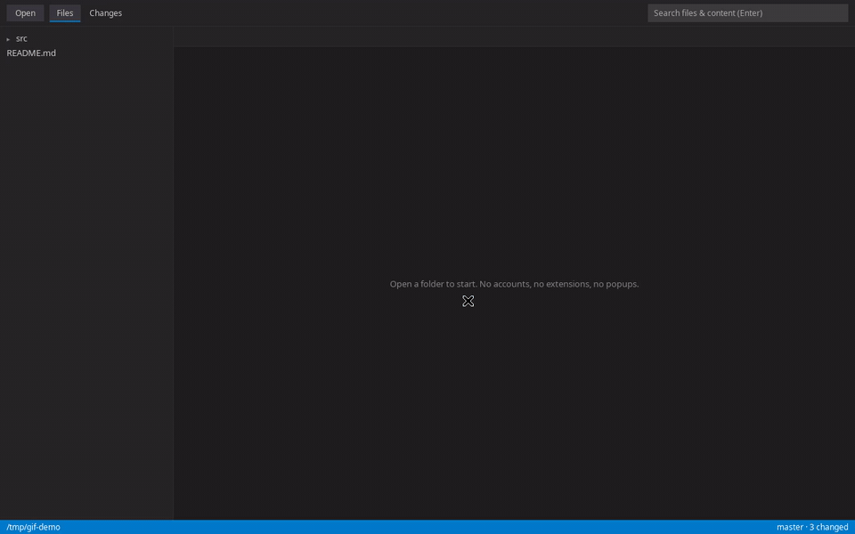

Open a repo.
See the diff.
Close it.
A 7 MB editor for the most common 30 seconds of your day: someone changed code and you just want to look. VS Code's editing engine, four features, and zero popups asking you to try an agent.
Install in 3 commands Source on GitHub
- ~1.1 s cold boot
- 0 network calls
- 0 extensions, accounts, prompts

Four features, each one finished
- Files
- Folder tree, tabs with dirty dots, syntax highlighting for 20+ languages, save. Keyboard-first: Ctrl+O open, Ctrl+S save, Ctrl+W close.
- Changes
- Git status list with M/D/R/?? badges and true side-by-side diffs against
HEAD. Step through every changed file with [ and ] without touching the mouse. - Search
- One box for filename and content search across the project, capped and instant. Enter to run, Esc to clear.
- Nothing else
- No marketplace, terminal, debugger, sync, telemetry, update nag, or AI sidebar. What ships is what you see — about 2,000 lines of app code.
Small and fast, measured
| Metric | minimal-editor | Full VS Code |
|---|---|---|
| Cold boot to interactive | ~1.1 s | 2–5 s |
| Install size (Linux .deb) | 4 MB | ~350 MB |
| Full test suite (boot + 14 feature cases) | ~1.9 s | — |
| Background processes when idle | 0 | extension host, file watcher, sync |
Measured on Ubuntu, release build. The shell is Tauri (system webview + Rust); the editor is Monaco — VS Code's own engine.
Install
From source (Linux, macOS, Windows)
git clone https://github.com/nitishagar/minimal-editor.git
cd minimal-editor
npm install && npm run build && npm startRequires Node.js 20+, Rust stable, and git. Linux also needs the
Tauri prerequisites
(libwebkit2gtk-4.1-dev etc.). Installers land in
src-tauri/target/release/bundle/.
Prebuilt binaries
Every push builds signed-by-CI installers for all three platforms —
.deb / .rpm / .AppImage,
.dmg, .msi — attached to the
release workflow artifacts.
How we prove "no agent spam"
Not a setting. Not a promise. Structural facts, each enforced in CI:
- Ban gate.
scripts/ban-gate.shfails the build if any telemetry, agent, or experiment string — or any remote URL — appears in app source. - No HTTP stack. The Rust backend has zero HTTP client crates; the gate fails the build if one is ever added. The app cannot phone home.
- Locked-down webview. Strict CSP (
default-src 'self', no object/base escapes), no new windows, navigation pinned to local files. - E2E verifies it. The headless suite asserts every shipped feature works and that zero remote resources load.
Questions
- Why not just fork VS Code?
- A full Code-OSS build drags the extension host, marketplace, sync, experiments, and agent surfaces with it — subtracting that back down fights the codebase and still ships its weight. Starting from Monaco + a bare shell adds up to 7 MB instead.
- Is the editor "real" VS Code editing?
- Yes — Monaco is the editor extracted from VS Code, same models, edits, undo stack, and diff engine. The e2e suite drives those exact code paths.
- Will you add extensions / terminal / debugging?
- No. That roadmap already exists and it's called VS Code. This tool stays four features.